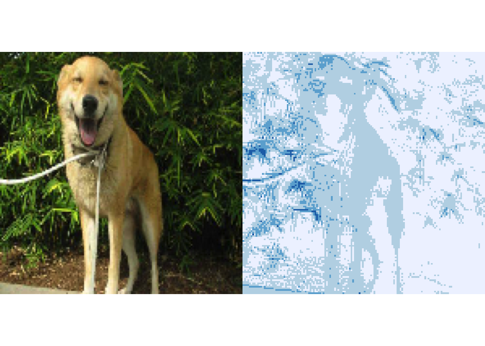
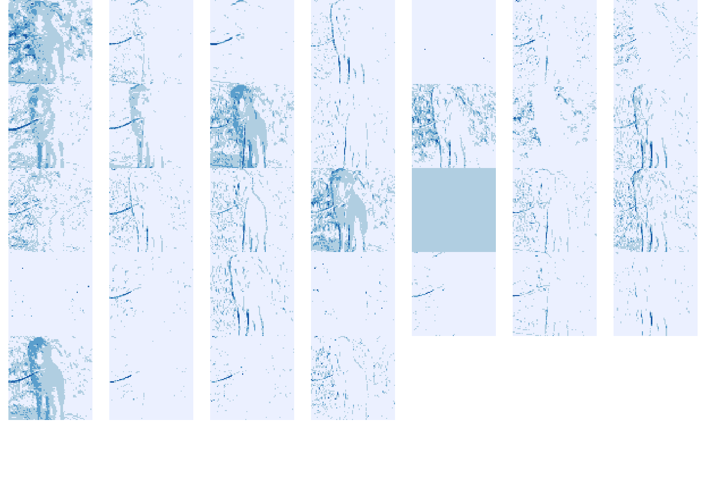
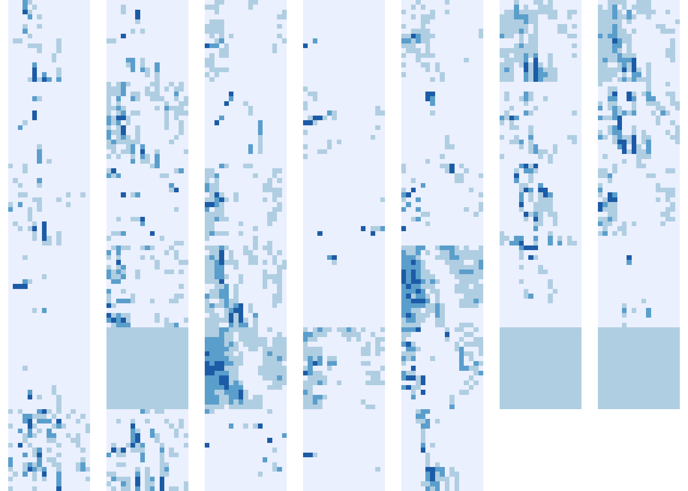

library(dplyr)
library(keras)
library(purrr)
library(RColorBrewer)Visualizing Learned Features
A first look at activations in a deep learning model.
In the last lecture, we discussed the conceptual foundations of feature learning. In this lecture, we’ll see how to extract and visualize features learned by a computer vision model.
We will inspect a model that was trained1 to distinguish between photos of cats and dogs. We’ve included a subsample of the training dataset below – the full dataset can be downloaded here. From the printout, you can see that we have saved 20 images, each of size \(150 \times 150\) pixels, and with three color channels (red, green, and blue).
f <- tempfile()
download.file("https://uwmadison.box.com/shared/static/o7t3nt77iv3twizyv7yuwqnca16f9nwi.rda", f)
images <- get(load(f))
dim(images) # 20 sample images[1] 20 150 150 3- Let’s take a look at a few examples from the training dataset. We’ve randomly sampled 10 dogs and 10 cats. The command
parallows us to plot many images side by side (in this case, in a \(4 \times 5\) grid).
par(mfrow = c(4, 5), mai = rep(0.00, 4))
out <- images %>%
array_tree(1) %>%
map(~ plot(as.raster(., max = 255)))
The
array_treefunction above splits the 4D array into a collection of 3D slices. Each of these 3D slices corresponds to one image — the three channels correspond to red, green, and blue colors, respectively. The nextmapline plots each of the resulting 3D arraysNext, let’s consider what types of features the model has learned, in order to distinguish between cats and dogs. Our approach will be to compute activations on a few images and visualize them as 2D feature maps. These visualizations will help us see whether there are systematic patterns in what leads to an activation for a particular neuron.
To accomplish this, we will create an R object to retrieve all the intermediate feature activations associated with an input image. Every time we call this object on a new image, it will return the activations for features at all layers.
# download model
f <- tempfile()
download.file("https://uwmadison.box.com/shared/static/9wu6amgizhgnnefwrnyqzkf8glb6ktny.h5", f)
model <- load_model_hdf5(f)
layer_outputs <- map(model$layers, ~ .$output)
activation_model <- keras_model(inputs = model$input, outputs = layer_outputs)
features <- predict(activation_model, images)1/1 - 0s - 124ms/epoch - 124ms/step- Each element of
featurescorresponds to a different layer. Within a single layer, the 3D array provides the activations of each feature across different spatial windows. For example, for the first layer, there are 32 features with activations spread across a 148 x 148 grid, each grid element with its own spatial context.
dim(features[[1]])[1] 20 148 148 32- The block below visualizes the first feature map in the first layer. We plot the associated input image next to it. This feature seems to be a horizontal edge detector – it activates whenever there are transitions from dark to light areas when moving vertically. For example, when the white leash goes over the shadow in the background, this feature has some of its highest activations.
plot_feature <- function(feature) {
rotate <- function(x) t(apply(x, 2, rev))
image(rotate(feature), axes = FALSE, asp = 1, col = brewer.pal(4, "Blues"))
}
ix <- 3
par(mfrow = c(1, 2), mai = rep(0.00, 4))
plot(as.raster(images[ix,,, ], max = 255))
plot_feature(features[[1]][ix,,, 1])
- Let’s visualize a few more of these features. We see more vertical and horizontal edge detectors — features with high values at sharp changes in color in the underlying images. This is consistent with our earlier claim that the first layer of a network learns to recognize pixel-level interactions.
par(mfrow = c(6, 7), mai = rep(0.00, 4))
out <- features[[2]][ix,,,] %>%
array_branch(margin = 3) %>%
map(~ plot_feature(.))
- Next, we visualize features at a higher level in the network. At this point, each activation corresponds to a larger spatial context in the original image, so there are fewer activations per feature. There are more feature maps total, but each is smaller. It’s not so clear what these feature maps correspond to, but there do seem to be a few that are clearly activated within the dog, and others that are sensitive to the foliage in the background.
par(mfrow = c(6, 7), mai = rep(0.00, 4))
out <- features[[6]][ix,,,1:40] %>%
array_branch(margin = 3) %>%
map(~ plot_feature(.))
- While we had some interpretations for these higher-level features, it’s hard to know definitively, since we are only considering a single image. In the next set of notes, we will examine the same neuron across many dataset examples, and this will give us more confidence in our interpretations of individual neurons.